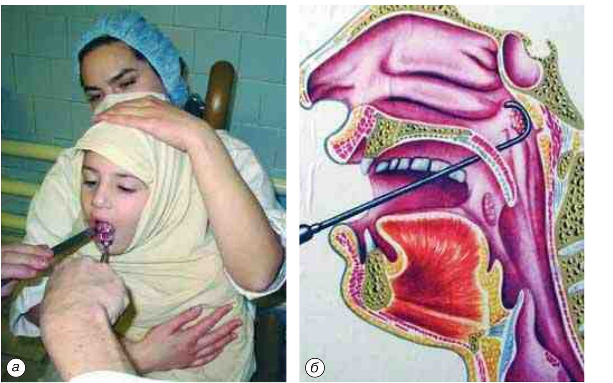
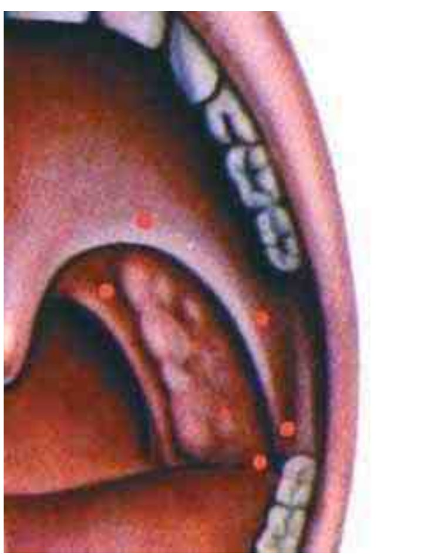
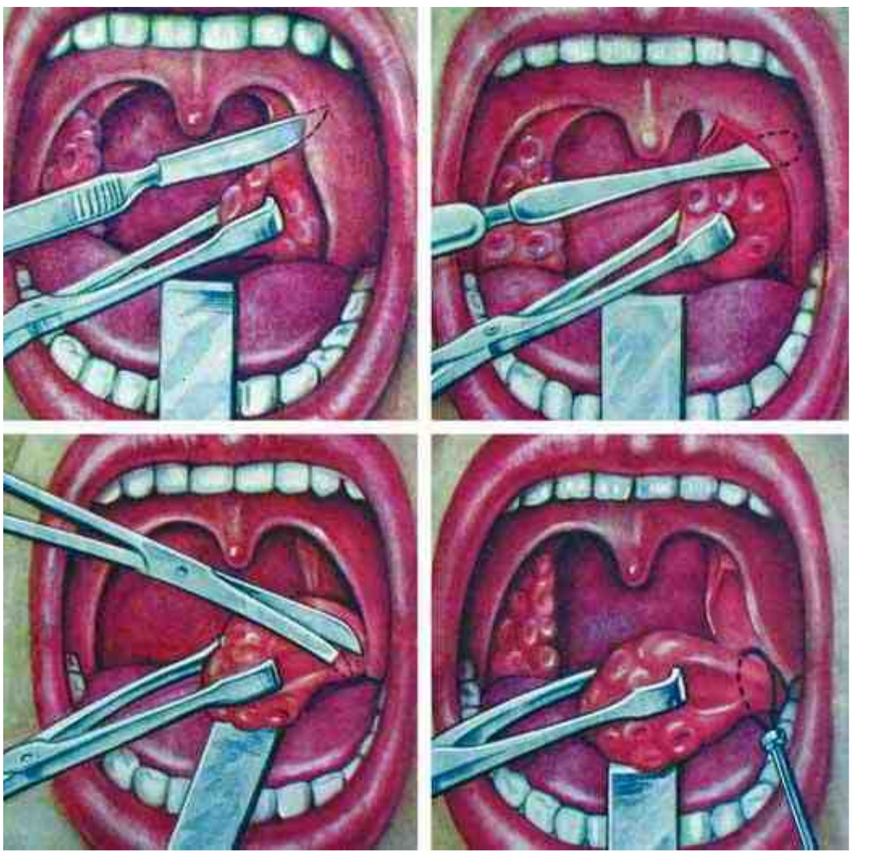
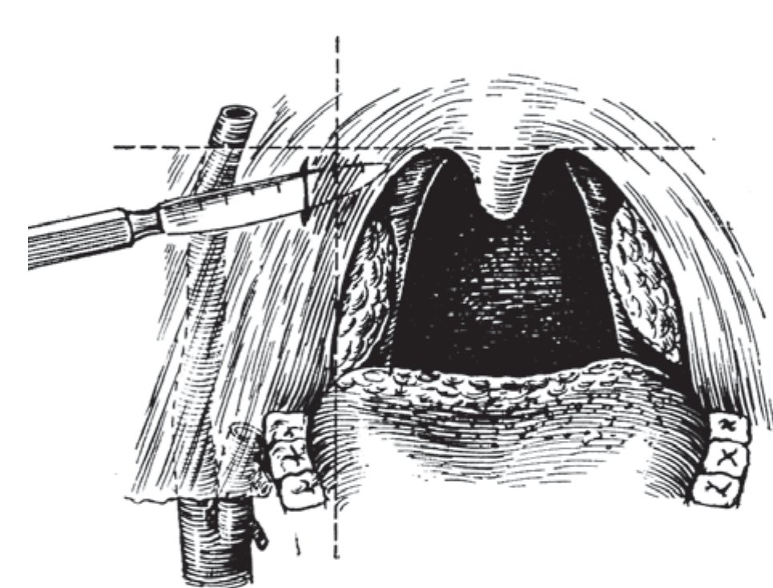
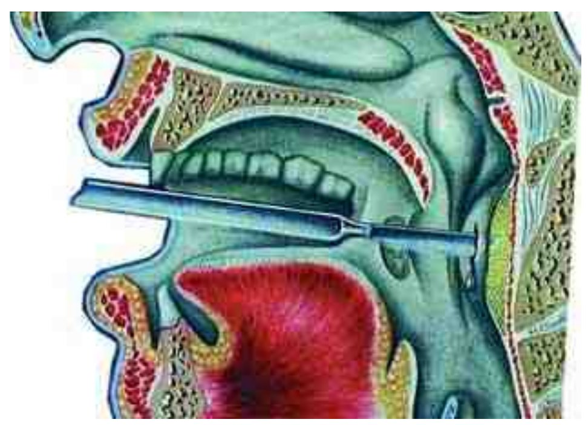
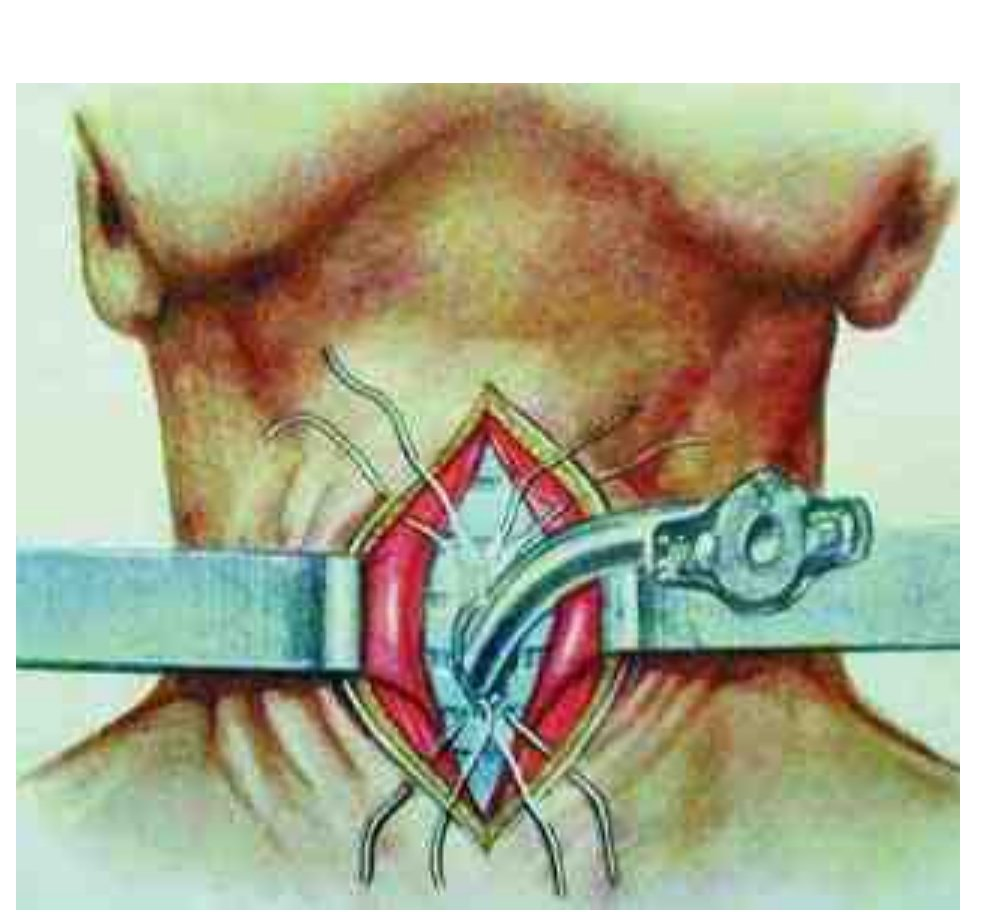
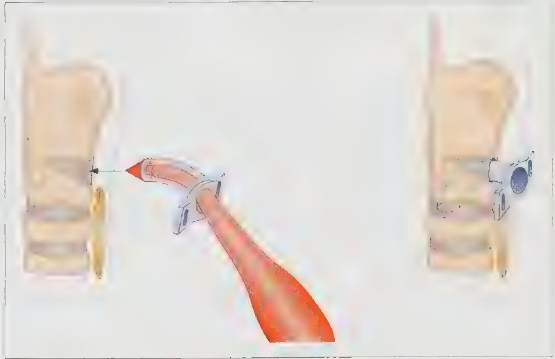
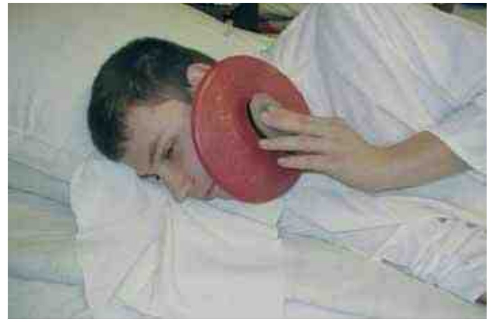

Операции на глотке, гортани и шее
Аденотомия
Основанием для удаления глоточной миндалины служит её гипертрофия, нарушающая носовое дыхание, глотание или речь. Аденотомия оправдана и при сохранённом носовом дыхании, если аденоидные вегетации закрывают глоточное устье слуховой трубы. Выделяют 4 степени гипертрофии: при I степени вегетации прикрывают 1/3 сошника, при II — до 1/2, при III — 2/3, при IV хоаны закрыты полностью; некоторые авторы различают только 3 степени.
Аденоиды II–IV степени дают выраженную клиническую картину. В слизистой оболочке полости носа развиваются застойные явления, которые могут перейти в хронический катаральный ринит; нарушаются функция слуховых труб и фонация, снижается слух. Длительное нарушение носового дыхания уменьшает оксигенацию крови: ребёнок становится вялым и рассеянным, хуже учится, страдает память, беспокоит головная боль, возможны нарушения развития лицевого скелета («аденоидное лицо»). Когда вегетации распространяются на устье слуховой трубы, её функция нарушается и в дальнейшем развивается воспаление среднего уха. Такие проявления в сочетании, как правило, с неэффективностью консервативного лечения служат показанием к операции; при гипертрофии III и IV степени консервативные меры неэффективны.
Противопоказаниями считаются болезни крови (геморрагический диатез, гемофилия, лейкоз и др.), тяжёлые заболевания сердечно-сосудистой системы, увеличение вилочковой железы. После острых воспалительных заболеваний дыхательных путей и перенесённой ангины операцию выполняют спустя 1–1,5 мес.
Обезболивание — эндотрахеальный наркоз, внутривенный наркоз (мидазолам, пропофол и др.) или местная аппликационная анестезия.
Аденоиды удаляют кольцевидным ножом — аденотомом Бекмана; аденотомы выпускают пяти размеров, и размер подбирают по величине носоглотки. Ребёнка обёртывают простынёй и усаживают на колени помощника так, чтобы его ноги оказались между коленями помощника; помощник удерживает голову ребёнка руками. Шпателем прижимают язык ко дну полости рта, аденотом вводят в носоглотку по средней линии и продвигают вверх к куполу носоглотки по заднему краю сошника. Когда аденотом прижат к куполу носоглотки и сошнику, аденоидная ткань входит в кольцо инструмента. Затем коротким быстрым движением нож смещают книзу, прижимая его к своду и задней стенке носоглотки. Аденоиды срезаются у основания и выбрасываются в полость рта либо остаются висеть на тонкой полоске ткани, откуда их удаляют щипцами. После этого ребёнок поочерёдно высмаркивает обе половины носа. Повторные движения аденотомом по бокам глотки выполняют осторожно, поскольку можно повредить устья слуховых труб.

Срезанные аденоиды иногда попадают в нижний отдел глотки и проглатываются; попадание аденоидной ткани в дыхательные пути опасно асфиксией. Поэтому предложены аденотомы с корзинкой или зубчиками, удерживающими срезанную ткань.
В последние годы внедряется эндоскопическая аденотомия под наркозом с визуальным контролем операционного поля эндоскопом или носоглоточным зеркалом. Для левой и правой половины носоглотки предложены отдельные модификации аденотомов (Козлов В. С., 2002), позволяющие под контролем зрения удалить вегетации полностью, в том числе вдающиеся через хоаны в полость носа или исходящие из заднего края сошника. Цель операции — освободить просвет хоан и восстановить носовое дыхание.
Небольшое кровотечение после операции быстро останавливается, и через 2–3 ч после контрольного осмотра глотки ребёнка отпускают домой. В первые сутки рекомендуют постельный режим, полужидкую негорячую пищу; физических нагрузок и резких движений следует избегать в течение 6–7 дней. Анальгетики назначают по показаниям.
Осложнения встречаются относительно редко. Наиболее частым из них является кровотечение в ближайшем послеоперационном периоде; иногда оно требует повторной аденотомии для удаления остатков аденоидной ткани и гемостатической терапии. Возможны инфицирование послеоперационной раны с развитием бокового или заглоточного абсцесса и повреждение устья слуховой трубы. Редко аденоидная ткань попадает в дыхательные пути; если ребёнок не может её откашлять, её удаляют с помощью бронхоскопа.
Тонзиллотомия
Тонзиллотомия показана при гипертрофии нёбных миндалин, которая суживает просвет ротоглотки и затрудняет носовое дыхание, глотание, изменяет тембр голоса. Степень гипертрофии по Б. С. Преображенскому определяют по двум линиям: горизонтальной, проведённой через середину передней дужки, и вертикальной — через середину язычка. Отрезок горизонтальной линии от середины передней дужки до пересечения с вертикальной делят на три части. При I степени миндалина занимает 1/3 этого расстояния, при II — 2/3, при III прикрывает более 2/3. Операцию выполняют, как правило, при III степени.
Больной сидит. Нёбные дужки и миндалины смазывают 10% раствором лидокаина, 2% раствором тетракаина или другим аппликационным анестетиком. Чаще используют гильотинный тонзиллотом Матье с вилочкой, удерживающей срезаемую медиальную часть миндалины. Удаляют зевную часть миндалины в объёме, достаточном для формирования просвета ротоглотки. Иногда применяют петлю Бохона; в этом случае удаляемую часть миндалины фиксируют зажимом Кохера.
У детей с гипертрофией нёбных миндалин нередко есть показания и к аденотомии; тогда обе операции выполняют одномоментно (аденотонзиллотомия). Подготовка и послеоперационное ведение — как при аденотомии. Тонзиллотомию выполняют как амбулаторно, так и в стационаре по тем же правилам, что и аденотомию. Следует помнить, что после тонзиллотомии возможна рубцовая деформация лакун с нарушением дренирующей функции миндалины.
Тонзиллэктомия
Тонзиллэктомия предполагает полное удаление нёбных миндалин вместе с капсулой. Показаниями служат хронический тонзиллит простой или токсико-аллергической формы I степени при неэффективности консервативного лечения; токсико-аллергическая форма II степени; хронический тонзиллит, осложнённый паратонзиллитом, или паратонзиллярные абсцессы в анамнезе; тонзиллогенный сепсис при отсутствии эффекта от консервативного лечения.
Относительными противопоказаниями считаются порок сердца с выраженной сердечной недостаточностью II–III степени, тяжёлый сахарный диабет с кетонурией, хронические заболевания почек с выраженной почечной недостаточностью, гемофилия и другие заболевания кроветворной системы с геморрагическим диатезом, активная форма туберкулёза лёгких. Временно операция противопоказана при кариозных зубах, острых воспалительных заболеваниях, во время менструации и в последние недели беременности.
Обезболивание — эндотрахеальный наркоз или местная инфильтрационная анестезия 1% раствором прокаина или 1% раствором лидокаина. Некоторые авторы добавляют к анестетику 0,1% раствор эпинефрина в соотношении 1:100 000, однако это чревато побочными сосудистыми эффектами — кровотечением в послеоперационном периоде вследствие вазодилатации. Анестетик вводят тонкой длинной иглой, чтобы не закрывать поле зрения, чаще всего из 5 точек (рис. 3.59), в том числе над верхним полюсом миндалины, в область её среднего отдела, под нижний полюс и в область задней дужки. Иглу вкалывают в толщу слизистой оболочки, затем продвигают в мягкие ткани, инфильтрируя паратонзиллярную область, но не глубже примерно 1,5 см. При каждом вколе вводят 2–3 мл раствора. Операцию начинают через 5–7 мин после окончания инъекций.

Главная задача — удалить миндалину полностью вместе с капсулой. Для этого конец элеватора должен проникнуть за капсулу, подобно тому как при септопластике его проводят под надхрящницу; после этого отсепаровка удаётся легко. Миндалину берут на зажим у верхнего полюса, отводят несколько медиально и острым распатором проникают в претонзиллярное пространство позади верхней трети передней дужки. Иногда предварительно надсекают скальпелем слизистую оболочку по краю передней дужки. Движениями вверх и вниз миндалину вместе с капсулой выделяют из ниши, начиная с верхнего полюса, затем средние отделы, доходя до нижнего полюса. Полностью отделять её не пытаются: у нижнего полюса капсулы нет, отсепаровка пойдёт вместе с подлежащей тканью и может усилить кровотечение. Ткань миндалины захватывают щипцами вместе с капсулой, иначе она рвётся и её трудно удержать.
Нижний полюс отсекают петлёй, чаще петлёй Бохона. Миндалину при этом максимально отводят медиально, а петлю прижимают к боковой стенке глотки, чтобы вся миндалина вместе с нижним отделом прошла через петлю и была отсечена одним блоком (рис. 3.60).

После удаления миндалин тонзиллярные ниши тщательно осматривают, чтобы исключить кровотечение и остатки лимфоидной ткани; остатки, как правило, находятся у верхнего или нижнего полюса, их удаляют. На кровоточащие сосуды при необходимости накладывают зажимы, затем кетгутовые лигатуры. Действует старое правило: из операционной в палату больного переводят только при сухих нишах. Следует учитывать, что сосудистый пучок шеи, расположенный в парафарингеальном пространстве, отстоит от нёбной миндалины на 1,8–2,5 см.
Остановка кровотечения при тонзиллэктомии
Кровотечение — одно из наиболее частых и опасных осложнений тонзиллэктомии. Оно возникает во время операции или позже, чаще в первые сутки, бывает локальным или паренхиматозным, артериальным или венозным, явным или скрытым.
При незначительном кровотечении во время вмешательства операцию не прерывают: миндалину быстрее вылущивают с капсулой, снимают петлёй и лишь затем находят источник и проводят гемостаз. Умеренное или сильное кровотечение останавливают по ходу операции: в уже отсепарованную часть ниши вкладывают свёрнутую в шарик марлевую салфетку или накладывают зажим Кохера, продолжают операцию и затем лигируют сосуд.
При кровотечении в послеоперационном периоде выполняют тщательную фарингоскопию, освобождают нишу от сгустков и осматривают места наиболее вероятных источников. В верхнем углу ниши, между передней и задней дужками, кровоточит верхняя тонзиллярная артерия — ветвь нисходящей нёбной артерии. В среднем отделе ниши, если отвести переднюю дужку, находится передняя тонзиллярная артерия — ветвь восходящей нёбной артерии. В самом нижнем отделе ниши кровоточат ветви язычной артерии.
На найденный источник накладывают кровоостанавливающий зажим Кохера; иногда достаточно держать его 15–20 мин. Если кровотечение продолжается, сосуд лигируют кетгутом. Незначительное кровотечение нередко останавливает обкалывание области 2–3 мл 1% раствора прокаина или 1% раствора лидокаина. Иногда целесообразно оставить в нише на несколько часов тампон или салфетку, пропитанную 5% раствором аминокапроновой кислоты. Чтобы исключить аспирацию, тампон закрепляют нитью к щеке либо накладывают поверх него стягивающие швы на дужки. Одновременно проводят гемостатическую терапию: этамзилат 2,0 мл внутримышечно, 10% раствор кальция хлорида или кальция глюконата внутривенно, 5% раствор аминокапроновой кислоты внутривенно и др.
При тяжёлом массивном кровотечении источник сразу установить невозможно. В такой ситуации следует немедленно, сохраняя хладнокровие, ввести указательным и средним пальцами в нишу марлевый тампон и плотно прижать его к боковой стенке глотки. Через 3–5 мин тампон на секунду убирают, определяют кровоточащий участок и накладывают на него зажим. Тампон можно прижимать и специальным зажимом Микулича: одна его бранша давит на тампон, другая лежит снаружи на щеке. В очень редких случаях приходится перевязывать наружную сонную артерию, что каких-либо осложнений не вызывает.
Вскрытие паратонзиллярного абсцесса
Вскрытие показано при абсцессе паратонзиллярной области, который чаще всего осложняет хронический тонзиллит, а также при одонтогенном абсцессе этой области. Клиническая картина ярко выражена. Больной предъявляет жалобы на очень сильную, как правило одностороннюю, боль в глотке; из-за боли с трудом проглатывает слюну и жидкую пищу. Рот полуоткрыт, речь гнусавая, голова слегка наклонена в больную сторону. Пальпаторно определяются инфильтрация и резкая болезненность подчелюстной области и угла нижней челюсти. При мезофарингоскопии выявляется выраженная асимметрия глотки за счёт отёка и инфильтрации паратонзиллярной области; отёк распространяется на язычок, просвет глотки сужен.
Обезболивание — местная инфильтрационная анестезия после смазывания операционного поля аппликационным анестетиком. Инфильтрировать следует только слизистую оболочку: при более глубоком введении иглы раствор изливается в полость абсцесса и не обезболивает.
Разрез выполняют в месте наибольшего выбухания. Если такого ориентира нет, разрез проводят там, где абсцесс обычно вскрывается самопроизвольно: на пересечении горизонтальной линии, проходящей по нижнему краю мягкого нёба здоровой стороны через основание язычка, и вертикальной линии, идущей вверх от нижнего края передней дужки больной стороны (рис. 3.64). Инцизия в этом месте менее опасна с точки зрения ранения крупных сосудов. Скальпелем рассекают ткани в сагиттальном направлении на глубину не более 1 см и длиной 2 см. В разрез вводят кровоостанавливающий зажим или инструмент Гартмана, расширяют его до 3–4 см и продвигают инструмент глубже в мягкие ткани в поисках полости гнойника, разрушая возможные перемычки. Через сутки края раны вновь разводят для лучшего опорожнения абсцесса.

Абсцесстонзиллэктомия
Абсцесстонзиллэктомия в остром периоде показана, если в анамнезе частые ангины, при затяжном течении процесса, при неэффективности предыдущих вскрытий и при появлении признаков осложнений — сепсиса, парафарингита, флегмоны шеи, медиастинита и др. При хроническом тонзиллите и частых ангинах в анамнезе удаляют обе миндалины, первой — поражённую.
Такая тактика полностью устраняет гнойный очаг при любой его локализации, обеспечивает быстрое выздоровление и от паратонзиллита, и от хронического тонзиллита, как правило исключает рецидивы и предупреждает тяжёлые осложнения. Технические трудности операции вполне преодолимы.
Мягкие ткани вокруг миндалины инфильтрируют 1% раствором прокаина или 1% раствором лидокаина; при этом тризм уменьшается и обзор улучшается. Тонзиллэктомию выполняют по общим правилам. Острым скальпелем рассекают слизистую оболочку по самому краю передней дужки, распатором выделяют верхний полюс миндалины. В ряде случаев при этом вскрывается абсцесс, который уже в значительной мере отслоил миндалину от ложа. Оставшиеся участки отсепаровывают до нижнего полюса, накладывают петлю Бохона и отсекают миндалину. После смены инструментов, поскольку первая операция была гнойной, удаляют миндалину с другой стороны. После операции назначают системную антибактериальную и симптоматическую терапию.
Вскрытие заглоточного абсцесса
Окологлоточное (парафарингеальное) пространство делится на заглоточное и боковое глоточное; оно заполнено рыхлой соединительной тканью, клетчаткой и лимфатической тканью. Через него проходит сосудисто-нервный пучок шеи, и оно прямо сообщается с позадипищеводной клетчаткой и средостением, поэтому гнойное воспаление этой области требует своевременной диагностики и лечения.
Заглоточный (ретрофарингеальный) абсцесс — гнойное воспаление лимфатических узлов и рыхлой клетчатки между фасцией глоточной мускулатуры и предпозвоночной фасцией; встречается у детей до 6–7 лет. Ребёнок беспокоен, постоянно плачет, отказывается от еды, температура тела повышается до фебрильных цифр; дети старшего возраста предъявляют жалобы на выраженную боль в глотке, усиливающуюся при глотании.
Обезболивание — местная инфильтрационная анестезия после смазывания задней стенки глотки аппликационным анестетиком, в ряде случаев наркоз. Выявленный абсцесс вскрывают незамедлительно. Аспирацию гноя в нижележащие дыхательные пути предупреждают предварительным отсасыванием гноя при пункции. Разрез проводят в месте наибольшего выбухания, но не далее 1 см от средней линии (рис. 3.65). Чтобы края разреза не слипались, их разводят инструментом Гартмана или корнцангом. После вскрытия рекомендуют полоскание полости рта антисептиками и назначают системную антибактериальную терапию.

Вскрытие флегмоны шеи
Нагноение клетчатки бокового глоточного пространства относится к тяжёлым и опасным заболеваниям и требует экстренного хирургического вмешательства. Больного беспокоят выраженная боль в гортаноглотке, усиливающаяся при глотании и поворотах головы, повышение температуры тела. При осмотре выявляется асимметрия подчелюстной области и шеи за счёт инфильтрации и отёка, пальпация подчелюстной области и угла нижней челюсти резко болезненна. Обезболивание — наркоз или местная инфильтрационная анестезия.
Наружный доступ применяют при распространённом процессе и при необходимости ревизии внутренней яремной вены. Кожу рассекают вдоль переднего края грудино-ключично-сосцевидной мышцы в области угла нижней челюсти, затем послойно рассекают подкожную клетчатку, поверхностную фасцию и подкожную мышцу шеи. Наружную яремную вену отводят в сторону или пересекают между двумя шёлковыми лигатурами. Вскрывают наружный листок фасциального влагалища грудино-ключично-сосцевидной мышцы, разводят её тупым путём и рассекают задний листок влагалища. Шилоподъязычную и двубрюшную мышцы тупо отводят в стороны и проникают в клетчатку бокового глоточного пространства. Зажимом или пальцем ревизуют эту область в направлении кпереди, к нёбной миндалине, до обнаружения гнойника.
Гнойник раскрывают широко, а при больших размерах накладывают контрапертуру для полного дренирования. Широкое вскрытие важно и для оксигенации тканей, поскольку причиной флегмоны шеи нередко служит анаэробная флора. Полость промывают 3% раствором перекиси водорода, антисептиками и растворами антибиотиков, дренируют перчаточной резиной и накладывают повязку. Перевязки выполняют дважды в сутки. В послеоперационном периоде назначают антибиотики, дезинтоксикационную и симптоматическую терапию.
Внутриротовой доступ — вскрытие парафарингеального абсцесса через тонзиллярную нишу после абсцесстонзиллэктомии на стороне поражения: проводят ревизию и широко раскрывают гнойник щипцами Гартмана или мягким сосудистым зажимом. Вмешательство требует большой осторожности из-за опасности ранения крупных сосудов.
Трахеотомия и трахеостомия
Эти вмешательства восстанавливают дыхание вскрытием трахеи наружным доступом. Трахеотомия — вскрытие полости трахеи; трахеостомия — вскрытие трахеи с подшиванием краёв кожной раны к краям разреза трахеи. Показаниями служат декомпенсированная стадия стеноза гортани, необходимость продлить интубацию трахеи на срок свыше 3 суток, а также выполнение трахеостомии как этапа других операций. При соответствующих показаниях врач обязан выполнить эти операции практически в любых условиях и без промедления.
По уровню разреза относительно перешейка щитовидной железы различают верхнюю трахеотомию (над перешейком), нижнюю (под перешейком) и среднюю (через перешеек после его рассечения и перевязки). Деление условно, поскольку расположение перешейка относительно трахеи вариабельно. При верхней трахеотомии рассекают 2–3 полукольца трахеи, при средней — 3–4, при нижней — 4–5.
Обезболивание — местная инфильтрационная анестезия. Больной, как правило, лежит на спине с валиком под плечами, чтобы гортань выступила вперёд и было легче ориентироваться; при быстро нарастающей асфиксии операцию выполняют в полусидячем или сидячем положении. Пальпируют подъязычную кость, вырезку щитовидного хряща и бугорок перстневидного хряща; срединную линию и уровень перстневидного хряща можно отметить бриллиантовым зелёным.
При верхней трахеотомии кожу и подкожную клетчатку рассекают послойно строго по срединной линии вертикально книзу от нижнего края щитовидного хряща на 4–6 см. Под поверхностной фасцией находится белая линия шеи — место соединения грудиноподъязычных мышц; её надсекают и тупо, бережно разводят мышцы. Открываются часть перстневидного хряща и чуть ниже перешеек щитовидной железы, коричнево-красный и мягкий на ощупь. Рассекают капсулу железы, фиксирующую перешеек, смещают перешеек книзу и удерживают тупым крючком. Становятся видны кольца трахеи, покрытые фасцией.
До вскрытия трахеи необходим тщательный гемостаз. Гортань, экскурсии которой при асфиксии значительно выражены, фиксируют острым крючком, вколотым в дугу перстневидного хряща, и подтягивают кверху. Чтобы предупредить сильный кашель, шприцем с иглой вводят в трахею несколько капель 2–3% раствора тетракаина. Остроконечным скальпелем вскрывают 2–3 полукольца трахеи в виде окошка диаметром около 1 см. Первое полукольцо рассекать нельзя: трахеотомическая трубка будет травмировать перстневидный хрящ и вызовет хондрит. Скальпель вводят на глубину не более 8–10 мм, чтобы не повредить заднюю, лишённую хряща стенку трахеи и прилежащую переднюю стенку пищевода. Размер разреза должен соответствовать размеру трахеотомической трубки.
После простой трахеотомии между краями кожной раны и разрезом трахеи остаётся открытая раневая поверхность, которая долго заживает, поэтому формируют трахеостому: накладывают 4 шва шёлковыми нитями между трахеей и краями кожной раны (рис. 3.66). Края отверстия в трахее раздвигают расширителем Труссо1 или Киллиана и вводят трахеотомическую трубку.

В детской практике, а также при стенозе, вызванном дифтерией гортани и трахеи, в ряде случаев применяют назотрахеальную или оротрахеальную интубацию гибкой трубкой из синтетического материала под контролем прямой ларингоскопии. Продолжительность интубации не должна превышать 3 суток. Если нужен более длительный срок, выполняют трахеотомию, поскольку длительное нахождение трубки в гортани вызывает ишемию слизистой оболочки с изъязвлением, рубцеванием и стойким стенозом.
Первую трахеостомическую трубку надёжно фиксируют не менее чем на 3 суток, пока не сформируется канал, и меняют через 7 дней, тогда же снимают швы. Тесёмки завязывают с обеих сторон шеи при нейтральном положении головы: если затянуть их при разогнутой шее, они окажутся слишком длинными, и трубка может быть выкашляна. Манжету, как правило, сдувают через 12 ч после операции, когда риск аспирации миновал. Вдыхаемый воздух не согревается и не увлажняется в верхних дыхательных путях, поэтому количество и вязкость трахеального секрета возрастают; в первые дни часто необходимы санация трахеи и увлажнение вдыхаемого воздуха, чтобы трубку не закупорили корки. Больному нужны письменные принадлежности для общения (по: Watkinson J. C., Clarke R. W. (eds.) «Scott-Brown's Otorhinolaryngology Head & Neck Surgery», 8th ed., т. 3, с. 1044–1045).
Наиболее частым осложнением трахеостомии и самой частой причиной смерти от неё является кровотечение, как правило из вен щитовидной железы или её перешейка; при значительном кровотечении рану ревизуют и перевязывают сосуд, тампонада раны допустима лишь как временная мера. Редко возникает воздушная эмболия при вскрытии крупных вен шеи. Трубка может сместиться в претрахеальное пространство: больной какое-то время продолжает дышать, но одышка постепенно нарастает, а трахеостомическое отверстие тем временем закрывается, и трубку уже не удаётся ввести обратно. При закупорке трубки и плотно ушитой коже развивается подкожная эмфизема шеи. Трахеопищеводный свищ возникает при ранении задней стенки трахеи во время операции или при давлении конца трубки на неё и проявляется аспирацией, несмотря на раздутую манжету. Трахеоартериальный свищ, чаще с плечеголовным стволом, встречается главным образом после облучения и при низкой трахеостомии и проявляется внезапным массивным кровотечением: трубку немедленно меняют на трубку с манжетой, раздувают манжету и незамедлительно ревизуют рану. К поздним осложнениям относятся трахеокожный свищ и стеноз трахеи (по: Watkinson J. C., Clarke R. W. (eds.) «Scott-Brown's Otorhinolaryngology Head & Neck Surgery», 8th ed., т. 3, с. 1045).
Коникотомия
Коникотомия — вскрытие полости гортани через коническую связку одномоментным рассечением всех слоёв мягких тканей. Её выполняют в стадии асфиксии как экстренную меру, без обезболивания, с последующей трахеостомией.
Коническая (перстнещитовидная) связка между щитовидным и перстневидным хрящами лежит непосредственно под кожей и легко пальпируется; её рассекают поперечным разрезом. Инструмент, которым вскрывают просвет гортани, держат перпендикулярно коже и не извлекают, пока между щитовидным и перстневидным хрящами не введена трубка: иначе слои тканей смещаются и закрывают доступ к просвету. В каждой укладке для неотложной помощи полезно иметь готовый набор для коникотомии. Коникотомию как можно скорее переводят в обычную трахеотомию, поскольку повреждение перстневидного хряща грозит стенозом гортани (по: Probst R., Grevers G., Iro H. «Basic Otorhinolaryngology», с. 379).

Удаление инородных тел глотки и гортани
Обезболивание — интубационный наркоз или местная аппликационная анестезия. Извлечь инородное тело из гортанного отдела глотки иногда трудно. Манипуляцию выполняют после подкожного введения 1 мл 0,1% раствора атропина сульфата и 1 мл 1% раствора тримеперидина под местной аппликационной анестезией: гортанными щипцами при непрямой ларингоскопии либо прямым корнцангом или щипцами при прямой гипофарингоскопии. Из грушевидного кармана инородное тело реже удаляют с помощью эзофагоскопа.
Крупное инородное тело гортаноглотки, например зубной протез, не следует извлекать силой, чтобы не ранить стенки глотки; если его не удаётся расшатать и извлечь, выполняют фаринготомию. Такие инородные тела удаляют в оториноларингологическом стационаре. При развитии стеноза гортани из-за крупного инородного тела в гортаноглотке пытаются удалить его изогнутыми гортанными щипцами, а при неудаче срочно накладывают трахеостому или выполняют коникотомию.
Из носоглотки инородное тело удаляют изогнутыми щипцами или инструментом Гартмана; удаление облегчает оттягивание мягкого нёба резиновым катетером. Крупное инородное тело носоглотки можно продвинуть в ротоглотку зондом, введённым через полость носа, помня о возможности его соскальзывания в пищевод или гортань. При осложнениях, вызванных инородными телами, вмешательство сочетают с активной антибактериальной и дезинтоксикационной терапией.
Инородное тело гортани выявляют при ларингоскопии, у детей — при прямой. В большинстве случаев его удаётся извлечь изогнутыми гортанными щипцами под контролем гортанного зеркала; в редких случаях при выраженном стенозе гортани показана экстренная трахеотомия. Крупное инородное тело у входа в пищевод иногда вызывает тяжёлый стеноз гортани, но при прямой ларингоскопии не обнаруживается; тогда ларингоскопом выполняют прямую гипофарингоскопию (эзофагоскопию) с осмотром входа в пищевод.
При инородном теле трахеи показана экстренная трахеоскопия с удалением инородного тела. Методом выбора является неотложная верхняя трахеоскопия через естественные пути. При локализации инородного тела в нижнем отделе трахеи, в области бифуркации или в бронхе трахеотомия больному облегчения не приносит, но значительно улучшает условия удаления. В осложнённых случаях (отёк и инфильтрация слизистой оболочки трахеи, общие реакции и др.) инородное тело удаляют через предварительно наложенную трахеостому (нижняя трахеоскопия). Инородные тела бронхов в подавляющем большинстве случаев удаляют при верхней бронхоскопии дыхательным бронхоскопом под наркозом с миорелаксантами короткого действия.
Ведение после операций в глотке
Наиболее распространённой операцией в глотке является тонзиллэктомия; она завершается тщательным гемостазом и осмотром ниш. Больного доставляют в палату на сидячей каталке и укладывают на бок со слегка опущенной на грудь головой (рис. 3.67). На шею со стороны операционной раны на 20–30 мин помещают пузырь со льдом.

В первые сутки, как правило, наблюдается обильная саливация. Глотать слюну больному не следует, поэтому ему рекомендуют дышать открытым ртом, а под голову подкладывают пелёнку для стекающей слюны с примесью крови. В первый день необходим абсолютный покой: больной избегает глотательных движений, не откашливается и не разговаривает (при крайней необходимости ему разрешают написать). При отсутствии признаков кровотечения через 6–8 ч после операции можно сделать несколько глотков холодной или комнатной температуры воды без газа. На ночь целесообразно назначить анальгетики и седативные средства, обычно парентерально (тримеперидин, диазепам, трамадол, кеторолак, метамизол натрия в комбинации с питофеноном и фенпивериния бромидом и др.).
Со следующего дня режим смягчают: утром больной получает жидкую, негорячую и нераздражающую пищу, ему разрешают разговаривать и вставать, но ещё 2–3 дня режим остаётся преимущественно постельным. Горячей и твёрдой пищи в этот период следует избегать; ограничения с каждым днём ослабевают.
Первые 3–4 дня ниши покрыты серовато-белым фибринозным налётом, сначала сплошным, затем островками; в различной степени выражены отёк дужек, мягкого нёба и язычка, увеличение и болезненность регионарных лимфатических узлов. Температура тела в первые дни обычно нормальная или субфебрильная, однако вечером в день операции и на 2-й день возможен подъём до 38 °С и выше вследствие заглатывания крови, её распада и всасывания. К 5–7-му дню ниши практически освобождаются от налёта и покрываются грануляциями; боль при глотании и разговоре в этот период несколько усиливается, иногда на 2–3 дня возникает субфебрилитет. С середины 2-й — начала 3-й недели начинается эпителизация раневой поверхности, и боль значительно уменьшается.
При благоприятном течении больного выписывают на 5–7-й день на амбулаторное долечивание; физической нагрузки следует избегать ещё 3–4 нед. У больных хроническим тонзиллитом с сопряжёнными заболеваниями (ревматизм, полиартрит, пиелонефрит, эндокардит и др.) операцию выполняют в стадии стойкой ремиссии сопряжённого заболевания и через 1–1,5 мес. после обострения тонзиллита; после операции рекомендуется профилактический курс антибиотиков пенициллинового ряда (амоксициллин с клавулановой кислотой и др.).
Ведение после операций на гортани
После эндоларингеальных, в том числе микрохирургических, вмешательств в первые сутки, как правило, развивается реактивный отёк тканей гортани; его выраженность зависит от объёма и травматичности операции. Сохраняются также опасность кровотечения и возможность присоединения инфекции верхних дыхательных путей.
Сразу после операции больной находится в постели, предпочтительно в полусидячем положении; на область гортани рекомендуется холод. В первые сутки необходим режим молчания, голосовой покой рекомендуется и в последующие несколько суток. В течение 4–6 ч после операции есть не рекомендуется, затем назначают щадящую диету без горячей и раздражающей пищи, кофе, крепкого чая и газированных напитков. Курение и алкоголь абсолютно противопоказаны.
Из лекарственных средств применяют противоотёчные (гипертонический раствор глюкозы, антигистаминные, мочегонные, гормональные препараты), антибактериальные и гемостатические. Больной находится под наблюдением дежурного оториноларинголога; при нарастании реактивных явлений терапию корректируют, прежде всего для предупреждения стеноза гортани, а при нарастании признаков стеноза врач должен быть готов наложить трахеостому. После стихания реактивных изменений начинают дыхательную гимнастику, а позже — дозированные голосовые тренировки под наблюдением фониатра.
Примечания
1Trousseau A. (1801–1867) — крупный французский терапевт. (по: Бабияк и соавт., т. 2, с. 645)
Источники
- Пальчун В. Т., Лучихин Л. А., Магомедов М. М. Руководство по практической оториноларингологии. — М.: Медицинское информационное агентство, 2010. — Гл. 3, с. 250–271.
- Бабияк В. И., Накатис Я. А., Говорун М. И. Оториноларингология. Руководство. Т. 2. — СПб.: Питер, 2009. — Примечания к главам (сведения об учёных): с. 645.
Раздел «Учебник» — справочная теория, не клинические рекомендации. Тактика ведения пациента — по разборам КР.